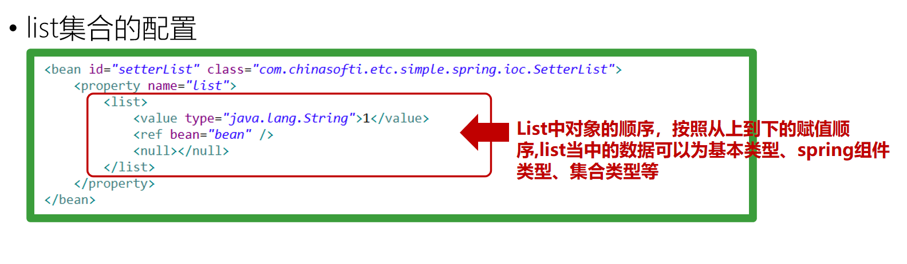

9月14日Spring笔记
发布时间：
本文字数：2,059 字 阅读完需：约 7 分钟
BeanFactory与ApplicationContext
在Spring中，那些组成应用的主体(backbone)及由Spring IoC容器所管理的对象被称之为bean。简单地讲，bean就是由Spring容器初始化、装配及被管理的对象，除此之外，bean就没有特别之处了(与应用中的其他对象没有什么区别)。而bean定义以及bean相互间的依赖关系将通过配置元数据来描述；
org.springframework.beans.factory.BeanFactory是Spring IoC容器的实际代表者，IoC容器负责容纳此前所描述的bean，并对bean进行管理；
在Spring中，BeanFactory是IoC容器的核心接口。它的职责包括：实例化、定位、配置应用程序中的对象及建立这些对象间的依赖；
spring.xml
<?xml version="1.0" encoding="UTF-8"?>
<beans xmlns="http://www.springframework.org/schema/beans"
xmlns:xsi="http://www.w3.org/2001/XMLSchema-instance"
xsi:schemaLocation="http://www.springframework.org/schema/beans http://www.springframework.org/schema/beans/spring-beans.xsd">
<!-- Spring 创建的 bean 对象 -->
<bean id="person" class="com.zr.vo.Person"></bean>
<bean id="dog" class="com.zr.vo.Dog"></bean>
</beans>
context包的核心是ApplicationContext接口。它由BeanFactory接口派生而来，因而提供了BeanFactory所有的功能。
延迟加载：
BeanFactroy采用的是延迟加载形式来注入Bean的，即只有在使用到某个Bean时(调用getBean())，才对该Bean进行加载实例化，这样，我们就不能发现一些存在的spring的配置问题。而ApplicationContext则相反，它是在容器启动时，一次性创建了所有的Bean。这样，在容器启动时，我们就可以发现Spring中存在的配置错误
延迟加载：使用时采取加载
立即加载：启动时就去加载
Bean的作用域
Spring创建bean对象，默认是单例模式
单例模式：内存中创建java对象，只能创建一个
Spring Framework支持以下几种作用域:
|作用域|描述| |--|--| |singleton|在每个Spring IoC容器中一个bean定义对应一个单例对象实例| |prototype|一个bean定义对应多个对象实例（每次使用该Bean构建一个新的对象）| |request|每次HTTP请求将会构建各自的bean实例（Web环境中生效）| |session|在一个HTTP Session中，一个bean定义对应一个实例（Web环境中生效）|
在xml文件中使用scope定义模式
示例: spring.xml
<?xml version="1.0" encoding="UTF-8"?>
<beans xmlns="http://www.springframework.org/schema/beans"
xmlns:xsi="http://www.w3.org/2001/XMLSchema-instance"
xsi:schemaLocation="http://www.springframework.org/schema/beans http://www.springframework.org/schema/beans/spring-beans.xsd">
<!-- 默认为单例模式 -->
<bean id="person" class="com.zr.vo.Person"></bean>
<!-- 非单例模式 scope = "prototype" -->
<bean id="dog" class="com.zr.vo.Dog" scope="prototype"></bean>
</beans>
java单例模式：在jvm中，单例模式的类的对象只有一个
Spring单例模式：在同一个spring容器中，单例模式的类的对象只有一个
延迟加载
可以通过配置明确要求ApplicationContext也采用延迟加载策略加载：
|作用域|描述| |--|--| |default|默认值，相当于false| |true|当第一次获取对象实例时创建Bean实例对象| |false|容器加载时创建Bean实例对象|
<!-- spring的bean对象 lazy-init 设置延迟加载-->
<bean id="person" class="com.zr.vo.Person" lazy-init="true"></bean>
bean标签的属性
name和id的特点：
- name可以赋多个值,id只能有一个值
- 二者都不能重复
- ApplicationContext 对象的
getBean()方法均能获取name或id
示例：
spring.xml
<?xml version="1.0" encoding="UTF-8"?>
<beans xmlns="http://www.springframework.org/schema/beans"
xmlns:xsi="http://www.w3.org/2001/XMLSchema-instance"
xsi:schemaLocation="http://www.springframework.org/schema/beans http://www.springframework.org/schema/beans/spring-beans.xsd">
<!-- spring的bean对象 lazy-init 设置延迟加载-->
<bean id="person" class="com.zr.vo.Person" lazy-init="true"></bean>
<!-- 设置多个name,只能设置一个id -->
<bean id="dog" name="wang,gou" class="com.zr.vo.Dog" scope="prototype"></bean>
</beans>
SpringTest.java
public static void main(String[] args){
ApplicationContext ac = new ClassPathXmlApplicationContext("spring.xml");
Dog dog = (Dog)ac.getBean("dog"); //通过id获取对象
Person person = ac.getBean(Person.class); //通过类名获取对象，不用转换类型
Dog dog1 = (Dog)ac.getBean("wang"); //通过name获取对象
System.out.println(dog1);
}
Bean的初始化方式
方式：
- 构造方法初始化
- 工厂方法初始化
工厂模式：
1.普通工厂模式：工厂类的方法是普通方法
CarFactory.java
package com.zr.factory;
import com.zr.vo.Car;
public class CarFactory {
public Car createCar(){
return new Car();
}
}
2.静态工厂模式: 工厂类的方法是静态方法
CarFactory.java
package com.zr.factory;
import com.zr.vo.Car;
public class CarFactory {
public static Car createCar(){
return new Car();
}
}
工厂模式初始化示例
spring.xml
<?xml version="1.0" encoding="UTF-8"?>
<beans xmlns="http://www.springframework.org/schema/beans"
xmlns:xsi="http://www.w3.org/2001/XMLSchema-instance"
xsi:schemaLocation="http://www.springframework.org/schema/beans http://www.springframework.org/schema/beans/spring-beans.xsd">
<!-- spring的bean对象 lazy-init 设置延迟加载-->
<bean id="person" class="com.zr.vo.Person" lazy-init="true"></bean>
<bean id="dog" name="wang,gou0" class="com.zr.vo.Dog" scope="prototype"></bean>
<bean id="factory" class="com.zr.factory.AnimalFactory" ></bean>
<!-- 普通工厂方法-->
<bean id="ren" factory-bean="factory" factory-method="createPerson"></bean>
<!-- 静态工厂方法-->
<bean id="gou" class="com.zr.factory.AnimalFactory" factory-method="createDog"></bean>
</beans>
AnimalFactory.java
package com.zr.factory;
import com.zr.vo.Person;
public class AnimalFactory {
public Person createPerson(){
Person person = new Person();
return person;
}
public static Dog createDog(){
return new Dog();
}
}
SpringTest.java
package com.zr;
import com.zr.vo.Dog;
import com.zr.vo.Person;
import org.springframework.context.ApplicationContext;
import org.springframework.context.support.ClassPathXmlApplicationContext;
public class SpringTest {
public static void main(String[] args){
ApplicationContext ac = new ClassPathXmlApplicationContext("spring.xml");
Dog dog = (Dog)ac.getBean("dog");
// Person person = ac.getBean(Person.class);
Person person0 = (Person) ac.getBean("person");
System.out.println(person0);
Dog dog1 = (Dog)ac.getBean("wang");
System.out.println(dog1);
Person person2 = (Person) ac.getBean("ren");
System.out.println(person2);
Person person3 = (Person) ac.getBean("ren");
System.out.println(person3);
Dog dog2 = (Dog) ac.getBean("gou");
System.out.println("dog地址："+dog);
System.out.println("dog2地址："+dog2);
}
}
输出如下：
Person对象被初始化
Person对象被初始化
com.zr.vo.Person@1e127982
com.zr.vo.Dog@60c6f5b
com.zr.vo.Person@2038ae61
com.zr.vo.Person@2038ae61
dog地址：com.zr.vo.Dog@60c6f5b
dog2地址：com.zr.vo.Dog@2038ae61
可见，构造方法初始化和工厂方法初始化获得的类地址是不同的，但由于默认为单例模式，统一方法初始化两个对象的地址相同，上例地址均为@2038ae61。
使用工厂模式创建的对象，本质上是注册了一个bean属性，类名和使用构造方法初始化注册的bean属性相同。此时，如果之前采用构造方法并使用类名获取对象，因为调用工厂模式获得对象则是相当于通过类型获取对象，那么会报错。原因就是上图所说的注册了多次的相同的bean，但用同一个class获取，spring不知道获取哪个对象。而用id获取对象则不会报错。
依赖注入(DI)
DI：Dependency Injection (依赖注入), 即给对象的属性赋值
依赖：根据什么
注入：赋值
注入方式：
- Setter 注入
- 构造器注入
- 工厂方法注入
- 接口注入
Setter 注入
示例
(在本例中，Dog和Person都是普通对象，且有set()方法和toString()方法)
spring-ioc.xml
<?xml version="1.0" encoding="UTF-8"?>
<beans xmlns="http://www.springframework.org/schema/beans"
xmlns:xsi="http://www.w3.org/2001/XMLSchema-instance"
xsi:schemaLocation="http://www.springframework.org/schema/beans http://www.springframework.org/schema/beans/spring-beans.xsd">
<bean id="person" class="com.ioc.vo.Person">
<property name="name" value="李雷"></property>
<property name="age" value="20"></property>
<!-- 用ref标签表示id为"dog"的Dog类型的对象 -->
<property name="dog" ref="dog"></property>
</bean>
<bean id="dog" class="com.ioc.vo.Dog">
<!-- 通过子标签给对象的属性赋值 -->
<property name="name" value="哈士奇"></property>
</bean>
</beans>
TestIoc.java
package com.ioc;
import com.ioc.vo.Dog;
import com.ioc.vo.Person;
import org.springframework.context.ApplicationContext;
import org.springframework.context.support.ClassPathXmlApplicationContext;
public class TestIoc {
public static void main(String[] args) {
ApplicationContext ac = new ClassPathXmlApplicationContext("spring-ioc.xml");
Dog dog = (Dog) ac.getBean("dog");
Person person = (Person) ac.getBean("person");
System.out.println(dog);
System.out.println(person);
}
}
输出结果如下：
Dog{name='哈士奇'}
Person{name='李雷', age=20, dog=Dog{name='哈士奇'}}
setName() 中的Name决定了依赖注入的属性名为name，而不是setName()方法中的属性名
p命名空间注入
spring-ioc.xml
<bean id="person" class="com.ioc.vo.Person" p:age="18" p:dog-ref="dog">
<property name="name" value="李雷"></property>
<!-- <property name="age" value="20"></property>-->
<!-- <property name="dog" ref="dog"></property>-->
</bean>
构造方法注入
spring-ioc.xml
<bean id="dog" class="com.ioc.vo.Dog">
<constructor-arg value="哈士奇"></constructor-arg>
<constructor-arg value="大型犬"></constructor-arg>
</bean>
<constructor-arg>标签的顺序按照构造方法的属性顺序写
Bean的管理
生命周期
初始化方法和销毁方法示例
Dog.java
// ......
public void init(){
System.out.println("Dog的bean初始化方法");
}
public void destroy(){
System.out.println("Dog的bean销毁方法");
}
//......
spring-ioc.xml
<bean id="dog" class="com.ioc.vo.Dog" init-method="init" destroy-method="destroy">
<constructor-arg value="哈士奇"></constructor-arg>
<constructor-arg value="大型犬"></constructor-arg>
</bean>
TestIoc.java
public class TestIoc {
public static void main(String[] args) {
ApplicationContext ac = new ClassPathXmlApplicationContext("spring-ioc.xml");
Dog dog = (Dog) ac.getBean("dog");
Person person = (Person) ac.getBean("person");
System.out.println(dog);
System.out.println(person);
((ClassPathXmlApplicationContext)ac).close();
// close()方法是ClassPathXmlApplicationContext对象特有的方法，所以要向下转型后才能调用
}
}
BeanPostProcessor
如果想在Spring容器完成bean的实例化、配置和其它的初始化后执行一些自定义逻辑，你可以插入一个或多个的BeanPostProcessor实现；
可以用BeanPostProcessor在bean的实例化过程中修改bean对象
示例：
config/MyBeanPostProcessor.java
package com.ioc.config;
import com.ioc.vo.Person;
import org.springframework.beans.BeansException;
import org.springframework.beans.factory.config.BeanPostProcessor;
public class MyBeanPostProcessor implements BeanPostProcessor {
/**
* 赋值后初始化方法之前执行
* @param bean
* @param beanName
* @return
* @throws BeansException
*/
@Override
public Object postProcessBeforeInitialization(Object bean, String beanName) throws BeansException {
return BeanPostProcessor.super.postProcessBeforeInitialization(bean, beanName);
}
/**
* bean 被创建后执行, 初始化方法之后执行
* @param bean
* @param beanName
* @return
* @throws BeansException
*/
@Override
public Object postProcessAfterInitialization(Object bean, String beanName) throws BeansException {
System.out.println(bean);
if("person".equalsIgnoreCase(beanName)){
Person person = (Person) bean;
person.setAge(16);
}
return BeanPostProcessor.super.postProcessAfterInitialization(bean, beanName);
}
}
spring-ioc.xml
<!-- 省略若干行 -->
<bean class="com.ioc.config.MyBeanPostProcessor"></bean>
<!-- 省略若干行 -->
效果：在bean被创建且赋值之后将 beanName为 person 的对象的age属性设置为16。
属性注入方式
List集合的注入
Person.java
private List<String> address;
public List<String> getAddress() {
return address;
}
public void setAddress(List<String> address) {
this.address = address;
}
spring-ioc.xml
<property name="address">
<list>
<value>长春</value>
<value>大连</value>
</list>
</property>
效果：为List<String> 类型的集合对象注入属性值


自动装配及类型
Spring IoC容器可以自动装配（autowire）相互协作bean之间的关联依赖关系，可以自动让Spring通过检查BeanFactory中的内容，来指定bean的协作者（其他被依赖的属性bean）;

在上图中，Person 中的Dog 属性可以用 autowire="byName" 参数在属性注入的时候自动装配，注意Bean Dog的id要与Person的属性名dog以及setDog方法相同。
autowire="byType"示例
spring-auto.xml
<?xml version="1.0" encoding="UTF-8"?>
<beans xmlns="http://www.springframework.org/schema/beans"
xmlns:xsi="http://www.w3.org/2001/XMLSchema-instance"
xsi:schemaLocation="http://www.springframework.org/schema/beans http://www.springframework.org/schema/beans/spring-beans.xsd">
<bean id="person" class="com.auto.vo.Person" autowire="byType"></bean>
<!-- byType要求bean类型在容器中唯一 -->
<!-- <bean id="dog" class="com.auto.vo.Dog"></bean>-->
<bean class="com.auto.vo.Dog"></bean>
</beans>
注意 byType要求bean类型在容器中唯一